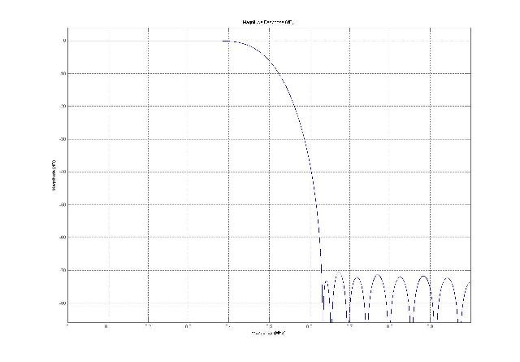
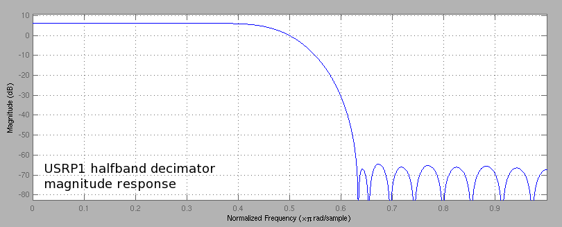

数字下变频
在 FPGA DDC 中，I 和 Q 采样是源自于复采样吗？ adc_interface 模块 The adc_interface module just seems to multiplex the same complex sample to 2 lines?
ADC 接口模块（adc_interface）负责分离接收到的信号为 I 和 Q 信号。然后将每对 IQ 路由到 DDC。
FPGA 接收链路中的复接器（Multiplexer）的目的如何？
MUX （复接器）如同路由器或电路切换器。它决定 ADC （或者'零'常值）连接到 DDC 输入的策略 。系统有 4 个 DDC，每个之上有两路输入。使用 Python 的函数 usrp.set_mux() 掌控 MUX。
复接器（MUX）的数值如下计算：
3 2 1 1 0 9 8 7 6 5 4 3 2 1 0 9 8 7 6 5 4 3 2 1 0 9 8 7 6 5 4 3 2 1 0 +-------+-------+-------+-------+-------+-------+-------+-------+ | Q3 | I3 | Q2 | I2 | Q1 | I1 | Q0 | I0 | +-------+-------+-------+-------+-------+-------+-------+-------+
Each 4-bit I field is either ADC 0,1,2,3 Each 4-bit Q field is either ADC 0,1,2,3 or 0xf (input is const zero) All FPGA DDC Q's must be 0xf or none of them may be 0xf.
We tell each input DDC input (I0, Q0, I1 ... I3, Q3) which ADC is connected to it by using 4 bits (0, 1, 2, 3 or 0xf). So a 32-bit integer would be enough for all 8 inputs to know which ADC is connected. Of course an integer in hexadecimal system will be more convenient if we want to use the set_mux() method. For most real sampling applications, the Q input of each DDC is constant zero. So quite often we don't need to modify the standard configuration of the FPGA. Actually it is anticipated that the majority of USRP users will never need to use anything other than the standard FPGA configuration.
想于 ADC 的输出之后 DDC 输入之前插入一个 FIR 滤波器。该 FIR 滤波器的采样频率如何？如此配置对吗？
The sample rate of the ADC is 64Msps. The samples then go through the CORDIC to generate complex pairs, then through a CIC with minimum decimation of 4, and then through a halfband 2:1 decimating filter. The lack of hardware multipliers inside the FPGA requires you to run a relatively simple filter unless you are running at "low" sample rates which allow you to serialize the data going through one or two multipliers and accumulate the output.
FPGA 的半带滤波器如何被构建， 还有为何在标准 FPGA 配置中抽取系数不能小于 8？
It has 31 taps. The current implementation of the halfband filter in the FPGA requires 8 clocks to process the 31 taps. See the comments about timing in fpga/sdr_lib/hb/halfband_decim.v.
This works fine with decimation 8 or higher. To run at decimation 4, you'll need to use a build of the FPGA that does not contain the halfband filter, or you'll need to re-implement the halfband, such that it uses two multipliers instead of one. In addition to the standard 2 Rx (with halfband) 2 Tx build, the *current* code contains an FPGA image with 4 RX paths (without the halfband) and with 0 transmit paths. It's not installed by default.
ADC 以 64MHz 采样，而且以 24 位 RX 总线方式通过 I 和 Q 通道。在 FPGA 内部，其 CIC 自动以抽取系数至少为 4 来抽取滤波。而半带抽取 FIR 滤波器在 FPGA 内以恒定抽取系数 2 来进行抽取滤波。这使得系统的最低抽取系数为 8， 使得通过 USRP 的 USB 的速率为 8 Msps。这样理解正确吗？
Yes. Note that some FPGA builds don't contain the half-band.
With 16-bit I & Q decim = 8 -> 8MS/sec -> 32MB/sec.
With 8-bit I & Q decim = 4 -> 16MS/sec -> 32MB/sec
有什么方法同 USRP decim_rate 一道来降低采样速率？
The decim_rate sets how much decimation is done in the FPGA. You can of course perform additional decimation in software. You'd probably want to use gr.fir_filter_ccf for that job. The first argument is the decimation rate.
Note:
To use 4 channels, you must use the std_4rx_0tx.rbf FPGA image. If you use the std_4rx_0tx.rbf image, the decimation rate must be <= 128. If you need more decimation, you must do it in software.
有奇数抽取系数吗？可以设置抽取系数为 125 吗？
With the std_4rx_0tx.rbf image, I believe odd numbers will work. They will not work with std_2rxhb_2tx.rbf
不解如何计算 USRP 的 CORDIC 算法的频率精度？
此文对于理解 CORDIC 很有帮助： CORDIC Algorithm
专为理解 FPGA 构建而书写的，内容上乘。据了解，USRP 使用的 CORDIC 在此文的 Section 3.1 中描述。一个相位累加器用于掌控角度的旋转；调制过的 sin/cos 或 xi 是 12 层算法叠代之后 xo 和 yo的输出。zo 应当为零值，而且任何遗留的错误理应在此输出被表述。
It is specifically written to look at FPGA implementations, which is nice. As I understand it, the USRP uses the CORDIC as described in section 3.1 of that paper. A phase accumulator is used to spin the angle around, and the modulated sin/cos or xi is the output on xo and yo after 12 iterations of the algorithm. The value of zo should be zero, and any error leftover should be represented on that output. The resolution should really be how slowly you can spin the zi component while maintaining accuracy out of the CORDIC. It may be that with 12 iterations and 16-bit inputs 0.01 Hz is possible, whereas more iterations or larger inputs might get better resolution, but I suspect you're really past the point of diminishing returns at that point.
The "phase generator" part of the CORDIC block works by incrementing a 32-bit phase register by a fixed amount per clock cycle. The full size of the register represents 2*PI() of phase, or one cycle of the waveform. The user programmed phase increment per clock cycle then represents frequency.
In the receive chain of the FPGA, the phase generator is clocked at 64 MHz. Thus, the minimum delta-frequency (a one bit change in the phase increment register) is 64 MHz / pow(2, 32) = 0.0149 Hz.
Thus, for DC, the phase increment value is zero, for 0.0149 Hz, it is 1, for 0.0298 Hz, it is 2, all the way up to 32 MHz, where it is pow(2, 31). You can also tune negative frequencies, where -1 creates -0.0149Hz, etc.
The CORDIC block then uses the resulting "sawtooth" phase value to rotate the incoming signal by that amount, resulting in complex frequency conversion. The FPGA CORDIC deals with phase and not frequency, so there is no concept of frequency resolution for it. The one being used in the USRP has 14 bits of PHASE resolution. Frequency resolution is controlled by the NCO, or phase accumulator. In our case it has 32 bits of resolution. 64 MHz/232 is your frequency resolution in Hz.
想要得到抽取系数为 64, 那么 DDC 的相应的 CIC 滤波器 (抽取系数 32)、HBF (抽取系数 2) 和级联后的 CIC+HBF (综合抽取系数为 64) 的表现如何?
抽取系数 32 的 CIC （4 阶）对于 0 到 2 MHz 频率的响应如下：

HBF 的频率响应如下（频率归一化）：


级联后的 (CIC + HBF) 的频率响应如下（频率归一化）：
(曾位于 http://img180.imageshack.us/img180/488/CICHBF.jpg, 现不存在？)